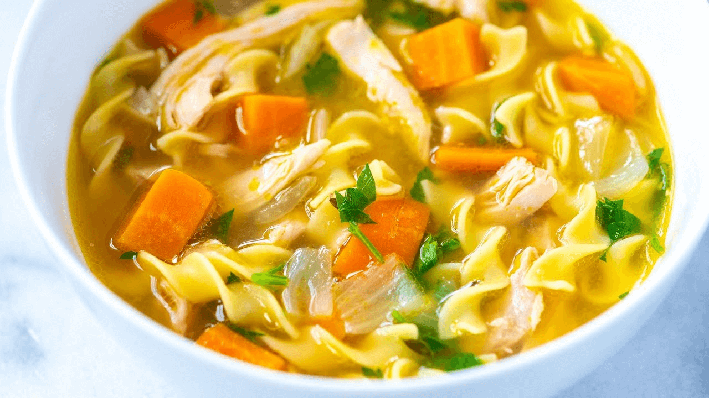

Enjoy Your Meal

Chicken Noodle Soup
Ingredients:
- 3 tablespoons vegetable oil
- 2 onions, diced
- 6 stalks celery, diced
- 6 carrots, diced
- ¾ tablespoon chopped fresh thyme
- ¾ chopped parsley
- 4 quarts chicken broth
- 3 cups cubed chicken breast meat
- 1 package egg noodles
- Salt and pepper to taste
Directions:
Step 1: In a large skillet over medium heat, cook onions in oil until translucent. Stir in celery, carrot, thyme and parsley and cook, covered, until vegetables are soft, 5 to 10 minutes.
Step 2: Transfer vegetable mixture to a large pot and pour in chicken broth. Simmer over low heat, covered, for 30 minutes.
Step 3: Stir in chicken breast pieces and egg noodles and simmer, covered, 30 minutes more. Season with salt and pepper.